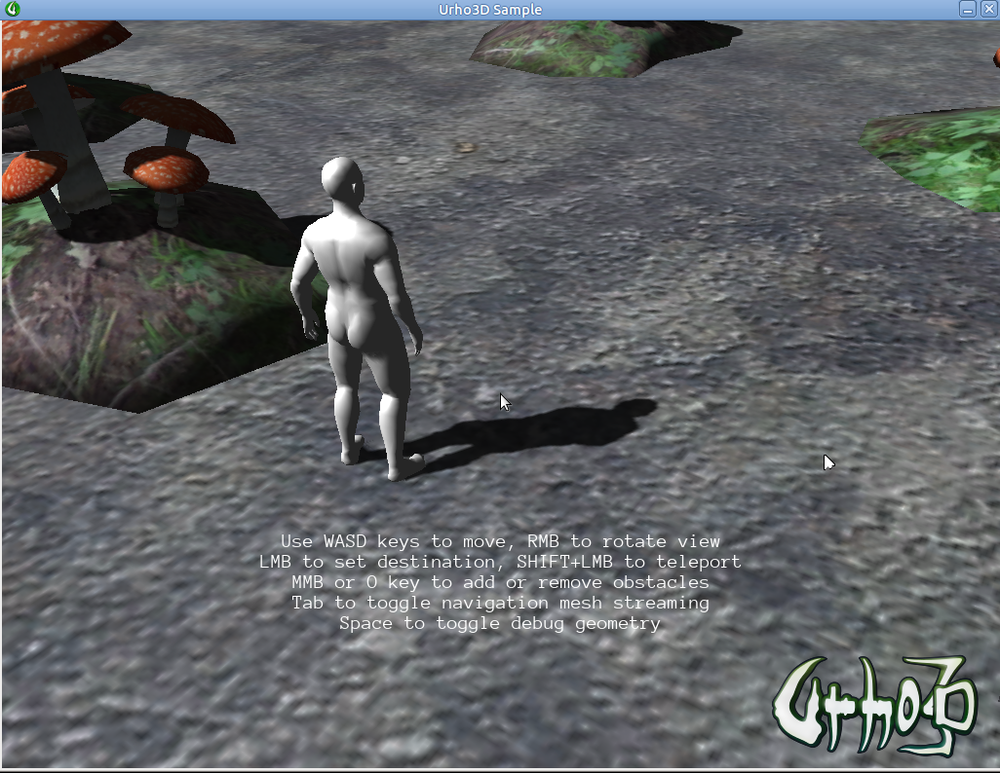
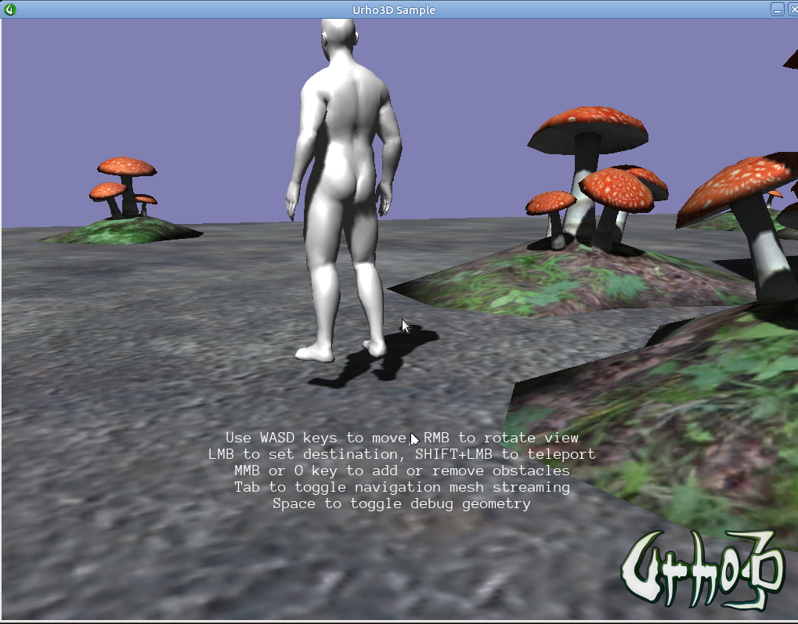

NinjaPangolin
Let’s take a closer look at character in 15_Navigation demo. Initially it stays correctly on the ground:

After clicking and moving it ends up slightly above ground.

In fact, comparing
GetPosition()
values for these states gives a difference equal to 0.2 on Y asix:
Initial position: -5 0 20
Final position: -4.74867 0.198792 29.8848
In
Navigation::CreateScene
I’ve add following debug cout:
// Now build the navigation geometry. This will take some time. Note that the navigation mesh will prefer to use
// physics geometry from the scene nodes, as it often is simpler, but if it can not find any (like in this example)
// it will use renderable geometry instead
navMesh->Build();
std::cout << "Random points: " << std::endl;
for(auto i=0; i <20; ++i) {
auto pt = navMesh->GetRandomPoint();
std::cout << "\t" << pt.x_ << " " << pt.y_ << " " << pt.z_ << std::endl;
}
And it looks like all navigation mesh points are placed slightly above the model level:
Random points:
-34.8614 0.2 -19.435
46.8862 0.2 16.3022
-15.4682 0.34107 -1.71237
16.1699 0.243568 27.2042
-14.4599 0.2 17.6979
-8.4888 0.2 -20.1714
-9.43277 0.2 -22.4549
-40.1437 0.2 49.0701
-21.6182 0.2 45.9047
-18.2657 0.2 -47.5353
21.4526 0.2 -18.5636
32.3839 0.2 -35.4006
0.882734 0.2 -36.7485
35.3857 0.2 -44.7061
36.6319 0.208437 11.8984
-29.6036 0.2 46.878
48.0064 0.2 47.2164
-46.7391 0.2 46.3535
2.76679 0.379008 14.8697
-49.0324 0.2 47.8133
What’s the cause and how can I fix this?